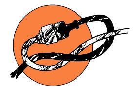
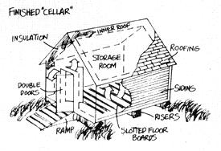
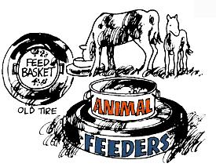
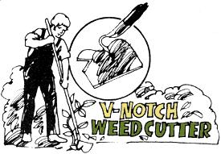
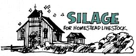

The crew that puts together LIFESTYLE! and THE MOTHER EARTH NEWS was given a special holiday present last fall: In addition to its usual average of about 56 hours of work a week, it was presented with the chore of nailing together (in its spare time) a 384-page paperback book for Bantam.
September, October, November, December and the first few days of January-in other words-were pretty brutal for some of the folks around here . . . and I'm afraid they didn't have much of a Thanksgiving, Christmas or New Year's celebration at all.
Why did they do it . . . why did nearly a dozen individuals work themselves (for very little more than minimum wage) until they were so exhausted that-at one time or another-they all actually became physically sick? Because they're damn good people who want to get THE MOTHER EARTH NEWS Research Center built for the (we hope) subsequent benefit of the planet and all of us. They knew that, by putting together a book that Bantam could mass-market, they'd be helping to spread MOTHER's word just a little further and-if all goes well-putting a few more dollars into the Research Center fund. I'm dang proud of 'em all.
And the book? Oh yes, the book. It's called THE MOTHER EARTH NEWS ALMANAC and it sells for $1.95 and it's packed with tables and formulas and recipes and tips and hints and weather lore and wild food ideas and organic gardening information and land-finding methods and recycling projects and alternative power concepts and all kinds of things. A few (actually a very, very few) of the book's subjects are shown on these two pages just to give you the tiniest idea of the wealth of knowledge crammed into the paperback . . . all written and illustrated just for the book.
Look for THE Mother Earth News ALMANAC wherever paperbacks are sold . . . or order out a copy direct from MOTHER's bookshelf. The money, as they say, is going for a good cause . . . and I betcha you'll like the book too!-JS.
To peel a turnip or other tough-skinned vegetable, score the rind in bands all the way around (like the Tropics of Capricorn and Cancer on the globe) and cut the strips off one at a time.
* * *
The next time the tips comes off one of your shoulders, dig the unprotected end of string in melted paraffin and shape before the wax hardens.
* * *
It's easy to sweep up the big pieces of glass when a bottle or tumbler is broken on the kitchen floor . . . and just as easy overlook the smaller slivers until they wind up in someone's fingers or bare feet. You can quickly collect those small she before they do any damage, however, by patting them up piece of absorbent cotton that has been moistened in water.
* * *
Put a small dish of water into the oven when when you bake bread and you'll find that it helps to keep the crust of the loaves from getting too hard.
* * *
Fruit jar rubbers sewed on each corner of a small rug will prevent the floor covering from slipping underfoot.
* * *
To get more juice out of an orange or lemon, roll the fruit firmly on a hard surface before you squeeze it.
* * *
A couple of tin cans in the middle of the fireplace will absorb heat and radiate a surprising amount into the room. Replace them every three or four days.
* * *
The shelf life of home-canned food can be increased by packing the jars in sawdust or hay to insulate them from extreme heat or cold.
* * *
Here's an old recipe for a pleasant-smelling mixture to be stored with linens: Dry rose leaves in the shade and mix a pound of them with one ounce each of cloves, caraway seeds and allspice. Pound the leaves and spices together in a mortar or grind them in a mill. Add a quarter pound of dry salt, mix well and put the scent in muslin bags.
* * *
If swallows fly high, expect fair weather, but if they stay near the ground, look out for rain.
* * *
To prevent mice from gnawing the bark of young apple trees in winter, the early American settlers used to pack snow very firmly around the base of the tree.
* * *
For what it's worth: The mosquito is attracted more to wet clothing than to dry, and is especially fond of the color blue.
* * *
By placing a damp cloth over a dent in wooden furniture and then applying a hot iron for a few minutes, you can often make the wood fibers spring back into place.
* * *
If your cat nibbles the leaves off your house plants, sow birdseed in a shallow pot and give him his own private supply of greens.
* * *
Add a few "red hots" or cinnamon candy drops as you cook up your next batch of homemade apple butter, and the spread will have both a better flavor and color.
Loop the cord from a portable power tool together
with the extension cord it plugs into as shown here
and you'll save yourself the aggravation of pulling
the two lines apart every time you move around
the project on which you're working.
You can build a pretty good root cellar above
ground if you construct it with double walls and a
double roof. Set the posts for the inner walls,
then-two feet farther out in all directions-the
uprights for the outer walls. Board up the
enclosure within an enclosure and stuff the space
between with dry leaves or straw. If you use sawdust or ground corncobs for insulation, you can cut the width of the space all the way around
to only one foot.
For the roof of your storage shed, build a double set of rafters designed so that the gap between the inner and outer beams is the same as the space between the walls. Lay boardson the lower rafters, stack on the leaves, straw, sawdust or whatever . . . and add the second set of supports and a roof.
It's best to design two doors for the entrance to your aboveground root cellar . . . with the outer one built double and filled with six inches of sawdust.
Construct the vegetable storage shed's floor a foot off the ground of either logs or boards spaced so that there are cracks between them. The narrow gaps will provide some air circulation and heat from the earth below . . . and dirt carried in on root vegetables will conveniently sift through the cracks and out of the way.
Set a livestock feed or water bucket in the center of
an old automobile tire and the animal or animals
won't be able to overturn the container.
Cut and sharpen a "V" notch into one side of
your garden hoe and you'll find it much easier to
nip off those tough weeds that seem to delight
in growing in tight corners. The V won't slip off as
you bear down on a particular weed and the edges of the notch-protected as they are from
constantly chopping into the ground-will stay
sharp an uncommonly long time.
Your crash course in subsistence farming is not complete until you can pronounce "silage" (sigh'-lij) correctly and know what it is. Silage is grass, or grain plants cut and chopped green and stored in a silo and the crop most successfully made into silage is corn. When the ear reaches the "dent" state, the whole plant is cut, chopped and blown into the silo . . . where it turns brownish and ferments into a feed cows love.
Air spoils silage quickly and must be kept out of the chopped feed. The least expensive way to store the food is in a trench silo, which is nothing but a basement-sized hollow scooped out of the ground. The silage is dumped in, tightly packed by running heavy-tired machinery over it and covered with plastic film. The forage is also packed tightly enough to exclude most air when it's stored in the old wooden upright silos, and the newest vertical silos are coated inside with glass or plastic to make them airtight.
Corn silage is a good cheap feed for subsistence farmers. if you have just a few livestock, though, it won't pay you to get all the equipment necessary to make silage (to say nothing of the silo). You can, however, store a small supply of the forage by piling it on the ground, covering it with plastic filet and burying the edges of the film in the ground. Ancient, stationary silage choppers can be acquired for a song in dairy country, and most of them will still work if the blades are sharpened. You can cut and tie green corn into bundles and haul them to the chopper.
You c an also avail yourself of farmers who have a custom service of chopping silage and filling silos for others.
if 1 had just one or two cows or goats to feed year 'round, I'd chop up all the stalks from the garden sweet corn patch (right after roasting ear season) with my rotary mower . . . and put the shredded plants into plastic bags. Instant silage!-GL
|
 |
|
 |
|
 |
 |
 |